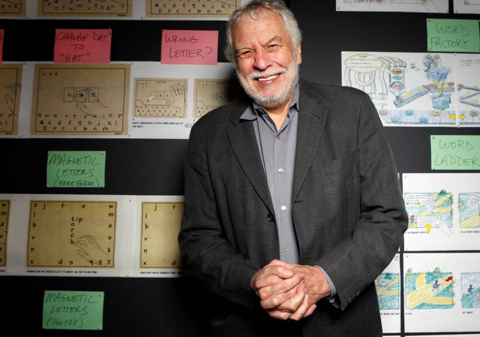

El gran conocido y misterioso enigma que se esconde en los videojuegos
Esto surgió en los años 70-80, en la compañía Atari de Nolan Bushnell.
Nolan "protegía" a sus desarrolladores con uñas y dientes, concretamente los mantenía en el anonimato, no les pagaba regalías y los trataba un poco regular.
Un programador llamado Warren Robinnet fue lo suficientemente astuto para esconder su nombre en el juego, y además bien escondido